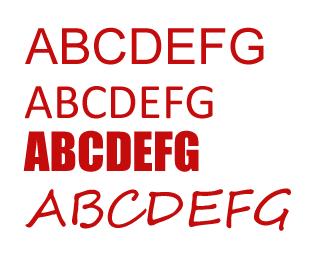

一个非创意性质的网页，最重要的内容，说白了就是文字，那么出现了文字，就会出现文字排版、字体选择、字体颜色大小粗细等细节。而这些细节，往往是非常重要的部分。
好的字体排版，可以让人耐心的看完那些文字，然后得到其中的重要信息，还可以影响到浏览者阅读的心情。同时，字体的选择、大小等，还应该配合企业的VI识别系统，还需要配合你作品需要表达的思想感情来确定（例如古典风格，应该选择哥特式字体等）。
1.字体的分类和格式
1.1.衬线和无衬线
衬线算是一种辅助性的小细节，笼统的谈，太过于抽象，我们来看两个例子：
上边两个字体，是有衬线字体，可以看到在边角的位置，会多出一些修饰。这样的好处就是，可以清晰的分辨出字母和文字，分辨笔划的起始和终止。但是，这种字体如果设置字体大小太小的话、或者你里文字较远，则会受到衬线影响，分辨不清晰。同时，由于中文系统，默认的字体为宋体，见的太多导致审美疲劳，所以衬线字体比较适合打印文字以及正规文档中使用，通常不太适合使用在网页中。而下边两个字体，就是无衬线字体，没有边角的修饰，令人看起来很整齐光滑，没有毛刺。比较适合用在网页中，让浏览者获取大量的文字信息而不会疲劳。推荐阅读：英文UI字型大评比：易读性测试
1.2.字体系列
字体之间最大的差异并不在于有无衬线，而在于字体与字体之间，形体的差异。但是很多字体（特别是英文字体）之间，差异不大，有些新字体甚至是对已有字体进行了细微的改造后产生的。于是，就把字体分成了几个大的系列，同一个系列中的字体，大体相同，称作通用字体系列。其中包括以下五个系列：
- serif：带衬线字体。Times New Roman 是默认的 serif 字体，中文字体的话，是宋体、仿宋之类的字体。
- sans serif：无衬线字体。Arial 是默认的 sans-serif 字体，中文字体中，微软雅黑、黑体等都是这类字体。
- monospace：等宽字体。这个字体里面的每个字母都有相同的宽度。通常用于显示程序代码等，Courier 是默认的 monospace 字体。而对于中文，每个汉字都是等宽的。
- cursive：模仿手写字体。手写体，比较个性，通常用于标题、logo等等。这个字体系列没有默认字体，英文来说，通常用 Comic Sans，中文的话，行书系列、草书系列的字体等，都可以算作手写字体。
- fantasy：装饰用字体。多数用于标题，极具个性，字体繁多，艺术字体。无法对其的大小、形状下一个统一的定论，所以没有默认字体，在网页中，也通常很少用到，除非你有特殊的用处创意性的设计。
1.3.字体的格式
格式就是指字体表现出来的粗细、宽度和姿态等等特征。看下面的这张图片：

上边图片里面的字，是相同大小的，同时排放在一条竖线上。为其应用了四种不同的字体后，体现出来了不同的形态和粗细大小。在中文字体中，不同的字体，在字间距中通常没有很大的变化。而对于右边图种的英文字体，不同的字体会改变字母的大小，导致整体的尺寸布局不同，进而导致整个排版混乱。相同的字体大小，在不同的字体下面，显示的效果几乎完全不同。这是英文字体选择中，比较麻烦和头疼的问题。
1.4.字体的选择
上面的这些理论，从某些角度和意义上来说，都是废话。如何选择合适的字体，才真正切合实际。那么我们应该如何选择在网页中使用的字体呢？
解决这个问题，我们先应该知道为什么要纠结于选择字体这个问题。我个人认为应该存在 实用性 和 创意性 这两个方面的因素。创意性很好理解，就是想突破常规，配合自己的网页中的设计思想而选择相应的字体，例如表达程序员的思维，就对代码使用等宽字体，表达恐怖、古典，使用哥特式字体等等。这点自己去找字体好了，不再赘述。最主要的问题是在于 实用性 的方面。
实用性问题，即不需要太过于华丽的字体，只需要大家看的都舒服、稍微带点自己的特色即可。你会说，很容易啊，直接 CSS 定义一条，填上个字体就好了。如果真这样，那就太好了。浏览器解析字体的过程实际上是这样的，当浏览器加载 CSS 后，解析到有关字体的样式，它会在你的系统中查找这个字体，只有找到了相应的字体文件，才会根据那个字体文件对网页中的文字进行渲染，显示出你想要的效果。
既然这样，如果你的操作系统中，并没有安装网页中定义的那种字体，就无法渲染出那种字体的效果，而通常使用当前系统的默认字体来渲染。那么你原有的设计，就不行了，你设计时觉得挺好，字体、位置、大小合适，但在别人的电脑上，清一色的宋体。所以这个问题，才是选择字体的难处所在。当然，有问题就有解决方式：
1.5.使用经典通用字体
不同操作系统都有不同的字体系统，但既然是字体，总有一些比较经典老牌的字体共同存在于各个系统中。例如无衬线的 Arial 字体，它产生的时间比较早，同时价格低廉，所以从早期就被 windows 操作系统使用，在其他的操作系统中，也会有较好的不同于默认字体的显示效果。所以 我爱水煮鱼、潜行者m博客 这些网站，直接在 CSS 中声明使用一个字体：Arial。使用多个字体属性
上面的方法很简单，但是不灵活，注重简单而不注重细节。CSS 做的很好，它可以在一个网页中，声明指定多个字体，这样当写在前面的字体，在当前操作系统中没有的话，就会使用后面字体顶替。所以当你看一些网页作品的时候，会发现它的 CSS 中的 font-family 属性，指定了一大堆的 字体 名称。但这个也不是可以随便指定的，也有一些注意事项。
你应该这样做，先确定你网页中需要用到的字体，然后确定属于哪个字体系列有无其他的相近字体以及衍生字体，然后编写字体属性。顺序如下：最想用的字体》》可以代替的相近字体》》相近通用字体。例如如下写法：代码不换行代码换行
font-family: Times, TimesNR, ‘New Century Schoolbook’,Georgia, ‘New York’, serif;这样的意思就是，优先使用 Times 字体，然后系统没有的话，查找同型异名的 TimesNR 字体，如果没有，寻找系统中的相近字体 New Century Schoolbook 等其他字体，最后如果都无法找到，就使用通用字体 serif ，这样浏览器就会寻找系统中的 无衬线 的默认字体，来代替。
2.字体的大小选择
2.1.形容字体大小的单位
在 CSS 中，最常用的描述字体大小的单位有两个：em、px。通常认为 em 为相对大小单位，px 为绝对大小单位。但从实际应用中来讲，px 像素其实也是一种相对大小单位。例如，在一块15寸分辨率为 800×600 像素的屏幕上，10px 大小的文字，要比一块10寸分辨率 1024×768 像素的屏幕上的 10px 大小的文字显得更大一些。下面来说一下它们的区别和用法等。
px：像素单位，10px 表示10个像素大小，在现在的网页设计中，常被用来表示字体大小。很方便很直观，但是有一些弊端。对于可用性不太友好，因为是“绝对”单位，所以有些浏览器（早期）的字体放大缩小功能失效。浏览器的默认字体大小为 16px ，早期的网页，由于屏幕分辨率比较低，通常采用12px作为网页正文的标准字体大小。但是在现在，感觉有点偏小，比较长的文章来说，浏览者看起来费劲。现在我更主张使用 14px 作为标准字体，16px 作为中等字体，18px 作为较大字体，12px 作为偏小字体比较合适。
em：相对大小，它表示的字体大小不固定，根据基础字体大小进行相对大小的处理。浏览器默认的字体大小为 16px，如果你对一段文字指定 1em，那么表现出来的就是 16px大小，2em 就是 32px 大小。相对大小单位有很广泛的用途，由于它的相对性，所以对跨平台跨设备的字体大小处理上有得天独厚的优势，同时对于响应式的布局设计也有很大的帮助。但是缺点很明显，你无法直观的看到大小，而且对于不同的大小，你需要精确的计算。
2.2字体实际表现出来的大小
上面只是说了两种形容字体大小的单位，但实际上表现出来的字体大小，并非简单的单位前面的数值。除了数值之外，潜行者m 个人认为还跟 设备 和 视距 有关。
设备就是指显示设备的分辨率及屏幕大小，跟前面解释 px 单位的相对性相同，如果在一块非常大的分辨率非常低的屏幕（像广场电子屏），即使很小的像素，也会展示出很大的字。这也就是为什么早期的 800×600 像素横行的时候，大家都是用12px大小的原因。因为显示的文字已经够大了。视距就是指浏览者看文字的距离。很明显的道理，眼睛距离屏幕越远，看起来上面的文字就变小了。
所以在选择网页中字体大小的时候，还需要考虑你的用户的实际使用习惯。同一个网页，在笔记本上和在手机上使用的时候，字体大小就不应该相同，因为电脑屏幕大分辨率高，而且视距通常比较近而且固定，手机等屏幕小分辨率较低，视距更近（大家都喜欢躺着或者趴着玩手机啦），所以这些都要考虑，才能得到一个合理的大小。
2.3.为什么是偶数字体大小
通过上面的单位介绍，对于 px 单位中，我举得例子都是 12px、14px、16px、18px等等，为啥不是11px、15px？这涉及到一个锯齿的问题，特别是在早期的显示器中，往往不能很好的处理文字的锯齿问题，而使用单数的像素，极有可能造成锯齿，所以默认的通常使用偶数大小。
3.字体的颜色选择
字体的颜色选择同样是一个重要的细节，但是涉及到配色了，已经超出本文要讨论的范围，所以在这里，我只好简单的说一下有关网页中字体颜色的禁忌。
3.1字体的颜色要朴素、正常
什么叫朴素正常？通常来说，文章都是白底黑字，黑色的。所以网页中的文字，通常使用黑色，或者浅灰色，这样更加符合大众的口味。如果不是一些很有创意的设计，请不要随便的使用颜色。如google搜索结果的色彩搭配就很经典…
3.2颜色要与背景有一定的对比度
低对比度，容易导致字体看不清楚。所以要用高对比度的颜色，例如白底黑字，黑底白字等。
当然，高对比度不是说就非得吊死在黑白两色上了…如下面一个广告公司的主页色彩搭配也很和谐：
3.3避免特殊颜色
这里要避免的一些特殊颜色，是指网页中的一些默认颜色。特别是蓝色，因为蓝色代表着网页中的超链接，如果网页中有一段蓝色的文字，会让人误以为是可以点击的超链接。所以这种颜色要尽量避免。但是有些时候在设计中，必须要用到这种颜色的设计，所以也有一些其他的方法来解决这个问题：
当用户看到蓝色的时候，可能会试图放在上面看一下，结果无法点击也没有变成手指。再往下拉，看到超链接的时候，一眼就可以看出下划线是可以点击的超链接。这是一种还不错的折中方法。
4.与字体有关的 CSS 属性
与字体有关的 CSS 属性，通常有以下几个：font-family、font-style、font-weight、font-size、line-height、letter-spacing、word-spacing、text-align、text-decoration。
- font-family：用于定义字体，上面有演示不多说。更详细的资料请看：font-family。
font-style：用于定义字体的样式，包括正常、斜体、倾斜等，对应的属性值为：normal C 文本正常显示、italic C 文本斜体显示、oblique C 文本倾斜显示。
font-weight：用于定义文字的粗细，详细的属性值请看：font-weight。
- font-size：设置字体大小，不再赘述。
- line-height：用于设置文字中的行间距，合适的行间距对用户阅读带来良好体验。同时还可以用于垂直布局单行文字。
- letter-spacing：设置文字之间的字间距，使文字之间的距离增大或者减小。
- word-spacing：用于调整单词的间距。
- text-align：用来对齐文字，例如左对齐、右对齐、居中对齐等。
- text-decoration：用来修饰一段文本，例如添加下划线等。常对 a 标签使用这个属性消除其默认的下划线。
上面是与字体相关，比较常用的 CSS 属性，还有其他更加具体的，可以参考网上的资料，推荐 W3school 上面的有关字体的资料。
5.使用在线字体
在 CSS3 中，引入了一个非常强大而且实用的功能来面对上面的字体选择问题。传统的字体选择，要你的操作系统中安装相应字体才可以显示。如果你在网页作品中，使用了其他的创意字体，那么你需要生成相应的文字图片来替换，否则不会显示。CSS3 中的这个功能，就是 Web Fonts，网页中可以使用安装在服务器端的字体。你可以将选择好的字体，上传到服务器中，然后使用 CSS3 新增的 @font-face 属性，来调用服务器上的字体，然后来渲染网页。
支持 CSS3 这一功能的浏览器，会首先找到服务器上的字体，然后下载下来进行渲染。这样就彻底解决了本地操作系统中，没有对应字体的问题。关于 @font-face 的具体使用方法，由于比较多，在本文不再赘述，请大家自行百度之：@font-face的使用方法。
既然如此，那么选择的余地就很大了，只需要有字体文件就可以。于是一些人就开始想，我可不可以提供一个在线字体的服务，大家可以直接看到字体的效果，然后获取代码引用这个字体？于是就出现了在线字体，比较有名的有 Google 在线字体。
不要高兴的太早了，自定义字体，目前只能应用在英文中。为什么呢？你下载个字体看一下就知道了，通常英文字体只有几百KB，因为它只需要包含数字、标点、英文字母即可。而中文字体通常十几M，最小的也要好几M。因为汉字实在是太多，而且还需要对每个汉字进行设计制作。这样的话，汉字就没法应用了，因为你要打开一个网页，还需要先下载个几M的汉字字体，在目前国内的网速是不现实的。
参考和推荐文献
本文部分参考并引用了以下网络资料，同时也推荐以下资料：
- 禅意花园（修订版）
- W3school CSS 字体
- Mac Ｗin 网页字体显示方案
引用部分，版权归原作者所有。
资料来源：http://shijue.me